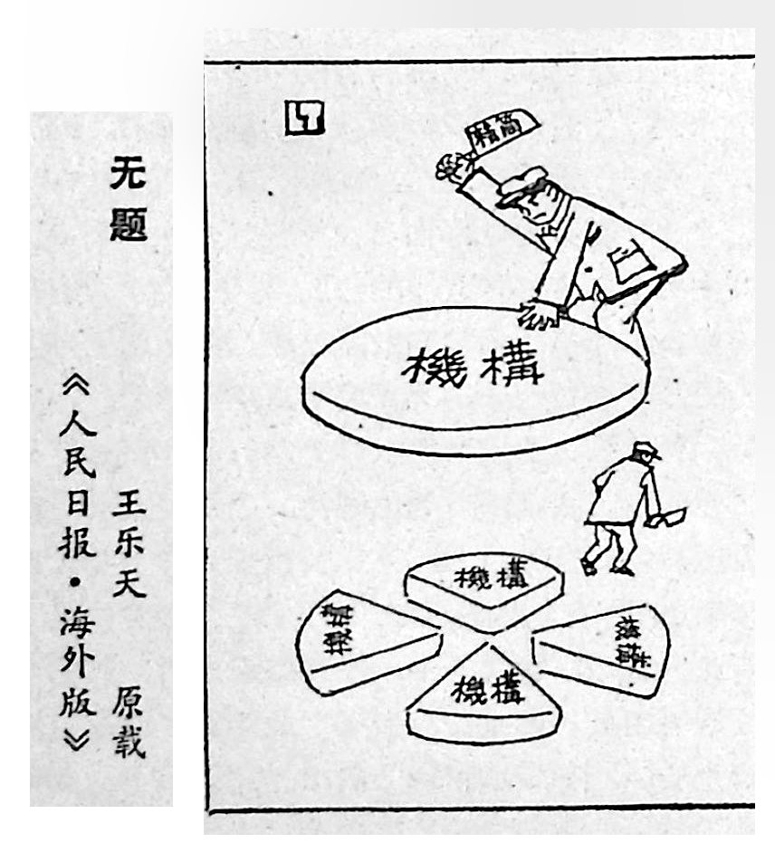

王乐天 《人事》1987年第10期（总第25期），第44页（原载《人民日报·海外版》）
无题
Untitled
- Text in the drawing
- 精简 / 机构 (×5)
Streamline / Agency (×5) - Description
- A cadre waving a flag marked “streamline” leans on a large round cake labeled “agency.” Below, a man with a cleaver walks away from the result: four smaller wedges, each still labeled “agency.”
- Note
- 精简机构, “streamlining the administrative structure,” was a recurring campaign of the 1980s; reorganizations often split one agency into several.
- Artist
- Wang Letian 王乐天
- Reprinted from
- 《人民日报·海外版》 — Renmin ribao, haiwai ban (People's Daily, Overseas Edition)
- Published in
- 《人事》1987年第10期（总第25期）, p. 44
- Themes
- Overstaffing and overlapping agencies · Reform and its implementation

Cite
Wang Letian, “无题” [Untitled], Renshi (Personnel) 《人事》, 1987, no. 10, p. 44.